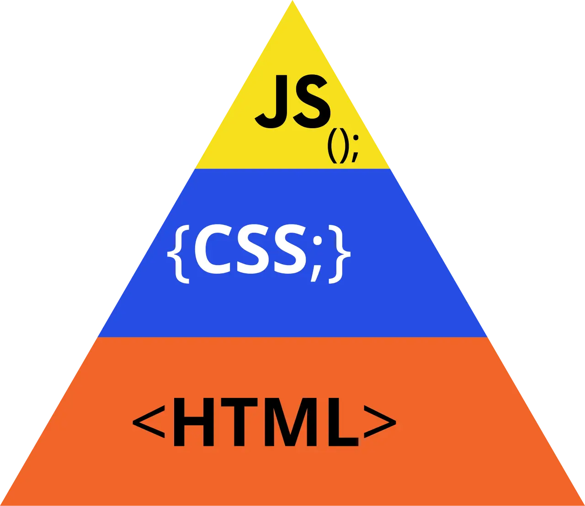

短答
渐进增强先把文档的文字放进 HTML，再添加呈现和行为。
图中的金字塔在 HTML 底座处最宽，CSS 较窄，JavaScript 是一个小尖顶。这张图是设计顺序，不是分数。SEO 健康把它用作测试：如果拿掉尖顶，获取结果是否仍然包含主题、标题和链接？如果答案是否定的，这个页面就是一段脚本，而不是带增强的文档。
定义
CSS 可以不存在，文字仍然能读。脚本可以不运行，锚点仍然能跟随。如果价格、规格或下一个 URL 只存在于增强层，那它就不是增强。它是放错层的文档。金字塔不是说禁止 JavaScript。它是说底座必须承载含义。
渲染对爬虫意味着什么变化
把主题、主要文字和抓取路径留在一次获取所返回的 HTML 里。
只在脚本构建之后才出现的菜单位于底座之上。把同样的目的地做成 HTML 里的真实锚点，如果需要，再让脚本去改样式。用禁用脚本的方式或普通获取来比较一条 URL。金字塔的颜色不是评分。一个页面可以在图上同时有橙、蓝、黄，却仍然把唯一的 H1 藏在黄色尖顶里。

要检查什么
- 包含主题和链接的一次获取
- 脚本只是重排这些链接的样式，而不是制造唯一副本
- 不依赖脚本也能得到文字的对照
- H1 存在于 HTML 中
- 按 HTML 获取的一条目录 URL
一个结构示例
目录卡片的名称和链接只在组件渲染之后存在。服务器响应是一个壳。修复是在 HTML 里渲染名称和锚点，并把筛选行为留在脚本里。第二次不运行脚本的获取能看见卡片。金字塔仍然是顺序的图片，不是证书。
它不声称什么
渐进增强的底座不保证排名或引用。
Mika Visibility 把它归到哪里
Mika Visibility 把渲染当作 SEO 健康问题：当模板依赖 JavaScript 时，重要 HTML 能否在有脚本和无脚本两种情况下被获取并比较。这种比较不是 GEO 审计，也不是市场覆盖计划。发现要附在样例 URL 上。模板改完之后的再审计，用来确认修复。
金字塔是层次的顺序。审计读的是 HTML 那一层。
常见问题
渐进增强里什么在最前面？
渐进增强先把文档的文字放进 HTML，再添加呈现和行为。
HTML 仍然必须包含什么？
把主题、主要文字和抓取路径留在一次获取所返回的 HTML 里。
渐进增强的底座能保证排名吗？
渐进增强的底座不保证排名或引用。
下一步
做一次结构化的 SEO + GEO 审计，查看健康发现、增长缺口和可以执行的蓝图。
更清晰的实体、答案、证据和上下文，会让页面更容易被理解与引用。任何回答产品中的结果都不作保证。